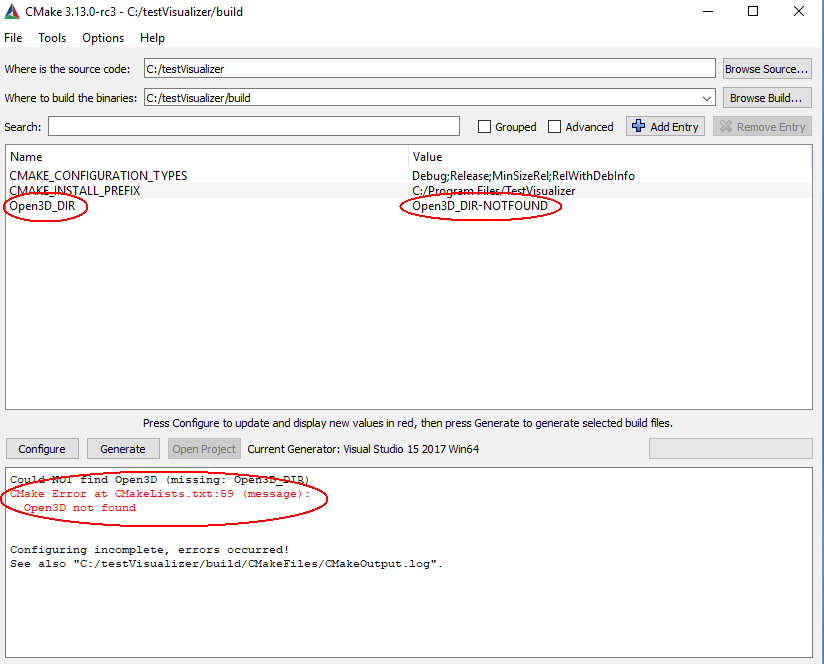

C++ interface¶
This page explains how to create a CMake based C++ project using the Open3D C++ interface.
Note
For help on the C++ interfaces, refer to examples in [examples/Cpp/Test], [examples/Cpp/Experimental] and [src/Tools] folder and check Doxygen document for C++ API.
Install open3d from source¶
For installing from source see Compiling from source.
Create C++ project¶
Ubuntu/MacOs¶
Let’s create a basic C++ project based on CMake and Open3D installed libraries and headers.
Get the code from
TestVisualizer.cppGet the CMake config file from
CMakeLists.txtBuild the project using the following commands:
mkdir -p build
cd build
cmake -DCMAKE_PREFIX_PATH="<Open3D_install_path>/lib/cmake/" ..
make -j
The CMAKE_PREFIX_PATH option is used to tell the CMake where to look for the Open3D installed files.
For example, if Open3D was installed to ~/open3d_install, the cmake command would look like this:
cmake -DCMAKE_PREFIX_PATH="~/open3d_install/lib/cmake/" ..
Windows¶
The steps for creating a C++ project based on the Open3D installed libraries and headers on Windows is very similar.
Copy the
TestVisualizer.cppandCMakeLists.txtfiles toC:/testVisualizer.Open CMake GUI and set the source folder to
C:/testVisualizerand the binaries folder toC:/testVisualizer/build.Configure.
At this time you will see that CMake is unable to find Open3D.
{kind=link}
For simplicity the Open3D install location is C:/open3d_install.
{kind=link}
In order for CMake to find the Open3D installed files you need to set Open3D_DIR to the location of the Open3D installed CMake files which is C:/open3d_install/CMake.
Configure. CMake finds Open3D.
{kind=link}
Generate. Open the TestVisualizer project and build.
Alternatively, this can be done by calling CMake from the console:
cd Open3D
mkdir build
cd build
cmake -G "Visual Studio 15 2017 Win64" -DCMAKE_INSTALL_PREFIX=C:\open3d_install ..
cmake --build . --parallel %NUMBER_OF_PROCESSORS% --config Release --target install
cd ..\docs\_static\C++\
mkdir build
cd build
cmake -G "Visual Studio 15 2017 Win64" -DCMAKE_PREFIX_PATH=C:\open3d_install ..
cmake --build . --parallel %NUMBER_OF_PROCESSORS% --config Release
Release\TestVisualizer.exe
Highlights¶
The following fragment from CMakeLists.txt shows how to specify hints to CMake when looking for the Open3D installation.
This technique is required when installing Open3D to a user location rather than to a system wide location.
13 14 15 16 17 18 | if(WIN32)
find_package(Open3D HINTS ${CMAKE_INSTALL_PREFIX}/CMake)
else()
find_package(Open3D HINTS ${CMAKE_INSTALL_PREFIX}/lib/CMake)
list(APPEND Open3D_LIBRARIES dl)
endif()
|
This section of the CMakeLists.txt specifies the installed Open3D include directories, libraries and library directories.
40 41 42 43 44 45 46 | link_directories(${Open3D_LIBRARY_DIRS})
add_executable(TestVisualizer TestVisualizer.cpp)
target_link_libraries(TestVisualizer ${Open3D_LIBRARIES})
target_include_directories(TestVisualizer PUBLIC ${Open3D_INCLUDE_DIRS})
|